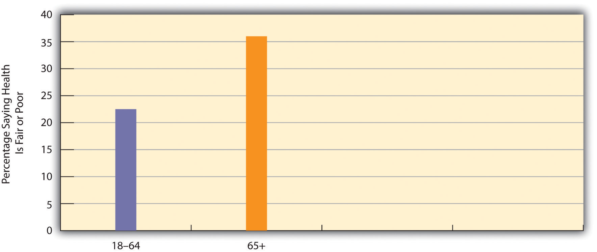
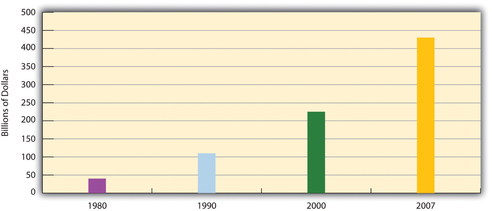

We now turn our attention to older people in the United States. We first sketch a demographic profile of our elderly and then examine some of the problems they face because of their age.
Table 12.2 "Demographic Composition of the Elderly, 2008" presents the demographic composition of Americans aged 65 or older. Slightly more than half the elderly are 65–74 years of age, and about 57% are female, reflecting males’ shorter life spans as discussed earlier. About 76% of the elderly are non-Latino whites, compared to about 66% in the population as a whole; 8.5% are African American, compared to about 13% of the population; and 6.6% are Latino, compared to 15% of the population. The greater proportion of whites among the elderly and lower proportions of African Americans and Latinos reflects these groups’ life expectancy differences discussed earlier and also their differences in birth rates.
Table 12.2 Demographic Composition of the Elderly, 2008
| Age | Marital status | ||
| 65–74 years | 51.8% | Married | 57.0% |
| 75–84 years | 33.5% | Widowed | 29.8% |
| 85 years and over | 14.7% | Divorced | 9.1% |
| Gender | Never married | 4.1% | |
| Female | 57.1% | Years of school completed | |
| Male | 42.9% | 0–8 years | 11.2% |
| Labor force participation | 1–3 years of high school | 11.4% | |
| Employed | 16.1% | High school graduate | 36.9% |
| Unemployed | 0.7% | 1–3 years of college | 20.1% |
| Not in labor force | 83.2% | College graduate | 20.5% |
| Race and/or ethnicity | Household incomea | ||
| White, non-Latino | 75.5% | Under $15,000 | 23.4% |
| African American | 8.5% | $15,000–$24,999 | 20.6% |
| Latino | 6.8% | $25,000–$34,999 | 15.0% |
| Asian/Pacific Islander | 3.4% | $35,000–49,999 | 13.7% |
| Amer. Ind., Esk., Aleut. | 0.6% | $50,000–$74,999 | 11.9% |
| Two or more races | 0.7% | $75,000–$99,999 | 6.0% |
| Living in poverty | 9.7% | $100,000 and over | 9.3% |
| a2007 data | |||
|---|---|---|---|
Source: Data from U.S. Census Bureau. (2010). Statistical abstract of the United States: 2010. Washington, DC: U.S. Government Printing Office. Retrieved from http://www.census.gov/compendia/statab.
The percentage of elders living in poverty is 9.7, compared to 13.2% of the entire population. Although most elders have fixed incomes, the fact that their family size is usually one or two means that they are less likely than younger people to live in poverty. In fact, today’s elderly are financially much better off than their grandparents were, thanks to Social Security; Medicare, the federal health insurance program for older Americans; pensions; and their own assets. We will revisit the health and financial security of elders a little later.
Turning to education, about 21% of the elderly are college graduates, compared to about 29% of the population as a whole. This difference reflects the fact that few people went to college when today’s elderly were in their late teens and early 20s. However, it is still true that today’s elders are better educated than any previous generation of elders. Future generations of the elderly will be even better educated than those now.
While most elders are retired and no longer in the labor force, about 16% do continue to work (see Table 12.2 "Demographic Composition of the Elderly, 2008"). These seniors tend to be in good health and to find their jobs psychologically satisfying. Compared to younger workers, they miss fewer days of work for health or other reasons and are less likely to quit their jobs for other opportunities (Sears, 2009).Sears, D. (2009, September 6). Myths busted on older workers’ job performance. Retrieved from http://www.career-line.com/job-search-news/myths-busted-on-older-workers-job-performance
Although we emphasized earlier that many older Americans do not fit the negative image with which they are portrayed, it is still true that they face special problems because of their age and life circumstances. We discuss some of these here.
Perhaps the problem that comes most readily to mind is health, or, to be more precise, poor health. The biological and psychological effects of aging lead to greater physical and mental health problems among the elderly than in younger age groups. These problems are reflected in responses to the General Social Survey question, “Would you say your own health, in general, is excellent, good, fair, or poor?” Figure 12.6 "Age and Self-Reported Health" shows that the elderly are more likely than the nonelderly to report that their health is only fair or poor.
Figure 12.6 Age and Self-Reported Health
Source: Data from General Social Survey, 2008.
The elderly’s perception of their own health is supported by government estimates of chronic health conditions for older Americans. For every 1,000 people aged 65 or older not living in a nursing home or other institution, 495 have arthritis, 533 have high blood pressure, 309 have heart disease, 405 have hearing loss, 174 have vision problems, and 180 have diabetes (these numbers add up to more than 1,000 as people may have several health conditions) (Federal Interagency Forum on Aging-Related Statistics, 2008).Federal Interagency Forum on Aging-Related Statistics. (2008). Older Americans 2008: Key indicators of well-being. Washington, DC: U.S. Government Printing Office. These rates are much higher than those for younger age groups.
The elderly also suffer from dementia, including Alzheimer’s disease, which affects about 1 of every 8 people 65 or older (Alzheimer’s Association, 2009).Alzheimer’s Association. (2009). 2009 Alzheimer’s disease facts and figures. Chicago, IL: Author. Another mental health problem is depression, which affects about 14% of people 65 or older. Because of mental or physical disability, 42% of all people 65 or older, or more than 16 million elders, need help with at least one “daily living” activity, such as preparing a meal (Federal Interagency Forum on Aging-Related Statistics, 2008).Federal Interagency Forum on Aging-Related Statistics. (2008). Older Americans 2008: Key indicators of well-being. Washington, DC: U.S. Government Printing Office.
If the elderly have more health problems, then adequate care for them is of major importance. They visit the doctor and hospital more often than their middle-aged counterparts. Medicare covers about one-half of their health-care costs; this is a substantial amount of coverage but still forces many seniors to pay thousands of dollars annually themselves. Some physicians and other health-care providers do not accept Medicare “assignment,” meaning that the patient must pay an even higher amount. Moreover, Medicare pays little or nothing for long-term care in nursing homes and other institutions and for mental health services. All of these factors mean that older Americans can still face high medical expenses or at least pay high premiums for private health insurance.
In addition, Medicare costs have risen rapidly along with other health-care costs. Medicare expenditures soared from about $37 billion in 1980 to more than $450 billion today (see Figure 12.7 "Medicare Expenditures, 1980–2007"). As the population continues to age and as health-care costs continue to rise, Medicare expenses will continue to rise as well, making it increasingly difficult to find the money to finance Medicare.
Figure 12.7 Medicare Expenditures, 1980–2007
Source: Data from Centers for Medicare and Medicaid Services. (n.d.). National health expenditure data. Retrieved from http://www.cms.hhs.gov/NationalHealthExpendData/downloads/tables.pdf.
While most older Americans live by themselves or with their families, a small minority live in group settings. A growing type of group setting is the continuous care retirement community, a setting of private rooms, apartments, and/or condominiums that offers medical and practical care to those who need it. In some such communities, residents eat their meals together, while in others they cook for themselves. Usually these communities offer above-average recreational facilities and can be very expensive, as some require a lifetime contract or at least monthly fees that can run into the thousands of dollars.
For elders who need high-level medical care or practical support, nursing homes are the primary option. About 16,100 nursing homes exist, and 3.5% of Americans 65 or older (or about 1.3 million individuals) live in them; this figure rises to 14% of people 85 or older (Federal Interagency Forum on Aging-Related Statistics, 2008).Federal Interagency Forum on Aging-Related Statistics. (2008). Older Americans 2008: Key indicators of well-being. Washington, DC: U.S. Government Printing Office. About three-fourths of all nursing home residents are women. Almost all residents (94%) receive assistance in bathing and showering, 80% receive help in using the bathroom, and one-third receive help in eating.
As noted earlier, Medicare does not pay for long-term institutional care for most older Americans. Because nursing home care costs at least $70,000 yearly, residents can quickly use up all their assets and then, ironically, become eligible for payments from Medicaid, the federal insurance program for people with low incomes.
If one problem of nursing homes is their expense, another problem is the quality of care they provide. Because their residents are typically in poor physical and/or mental health, their care must be the best possible, as they can do little to help themselves if their care is substandard. As more people enter nursing homes in the years ahead, the quality of nursing home care will become even more important. Yet there is much evidence that nursing home care is often substandard and is replete with neglect and abuse (DeHart, Webb, & Cornman, 2009).DeHart, D., Webb, J., & Cornman, C. (2009). Prevention of elder mistreatment in nursing homes: Competencies for direct-care staff. Journal of Elder Abuse & Neglect, 21(4), 360–378. doi:10.1080/08946560903005174
Earlier we noted that the elderly are less likely than younger age groups to live in poverty and that their financial status is much better than that of previous generations of older people. However, this brief summary of their economic well-being obscures several underlying problems (Crawthorne, 2008; Treas, 1995).Crawthorne, A. (2008, July 30). Elderly poverty: The challenge before us. Retrieved from http://www.americanprogress.org/issues/2008/07/elderly_poverty.html; Treas, J. (1995). Older Americans in the 1990s and beyond. Population Bulletin, 50(2), 1–46.
First, recall Chapter 6 "Groups and Organizations"’s discussion of episodic poverty, which refers to the drifting of many people into and out of poverty as their jobs and other circumstances change. Once they become poor, older people are more likely than younger ones to stay poor, as younger people have more job and other opportunities to move out of poverty. Recall also that the official poverty rate obscures the fact that many people live just above it and are “near poor.” This is especially true of the elderly, who, if hit by large medical bills or other expenses, can hardly afford to pay them. In another problem, older women are more likely than older men to live in poverty for at least two reasons: women earn less than men and thus have lower monthly benefits under Social Security than men, and women outlive men and thus use up their savings. Racial and ethnic disparities also exist among the elderly, reflecting poverty disparities in the entire population, as older people of color are much more likely than older whites to live in poverty (U.S. Census Bureau, 2010).U.S. Census Bureau. (2010). Statistical abstract of the United States: 2010. Washington, DC: U.S. Government Printing Office. Retrieved from http://www.census.gov/compendia/statab
Two final problems relate to Social Security, which is the largest income source for most elders. If Social Security did not exist, the poverty rate of the elderly would be 44%, or about five times higher than the actual rate (Crawthorne, 2008).Crawthorne, A. (2008, July 30). Elderly poverty: The challenge before us. Retrieved from http://www.americanprogress.org/issues/2008/07/elderly_poverty.html Without Social Security, then, nearly half of all people 65 or older would be living in official poverty, and this rate would be even much higher for older women and older persons of color. Unfortunately, many observers think the Social Security system is facing a crisis as the large number of baby boomers now reaches retirement age (Sloan, 2009).Sloan, A. (2009, August 2). A flimsy trust: Why Social Security needs some major repairs. The Washington Post, p. G01. Another problem is that, as noted earlier regarding women, monthly benefits are tied to people’s earnings before retirement: the higher the earnings, the higher the monthly benefit. Thus a paradox occurs: people who earn low wages will get lower Social Security benefits after they retire, even though they need higher benefits to make up for their lower earnings. In this manner, the income inequality that exists before retirement continues to exist after it.
This paradox reflects a wider problem involving Social Security. However helpful it might be in aiding older Americans, the aid it provides lags far behind comparable programs in other wealthy Western nations (see the “Learning From Other Societies” box). Social Security payments are low enough that almost one-third of the elderly who receive no other income assistance live in official poverty. For all of these reasons, Social Security is certainly beneficial for many older Americans, but it remains inadequate compared to what other nations provide.
Elderly Policy and Programs in the Netherlands and Sweden
A few years ago, AARP assessed quality-of-life issues for older people and the larger society in 16 wealthy democracies (the nations of North America and Western Europe, along with Australia and Japan). Each nation was rated (on a scale of 1–5, with 5 being the highest score) on 17 criteria, including life expectancy, health care for the elderly, pension coverage, and age-discrimination laws. Of the 16 nations, the Netherlands ranked first, with a total score of 64, while Italy ranked last, with a score of 48; the United States was 13th, with a score of 50 (Edwards, 2004).Edwards, M. (2004, November/December). As good as it gets: What country takes the best care of its older citizens? AARP The Magazine. Retrieved from http://www.aarpmagazine.org/lifestyle/Articles/a2004-2009-2022-mag-global.html Despite its immense wealth, then, the United States lagged behind most other democracies. Because a “perfect” score would have been 85 (17 × 5), even the Netherlands fell short of an ideal quality of life as measured by the AARP indicators.
Why did the United States not rank higher? The experience of the Netherlands and Sweden, both of which have longer life expectancies than the United States, points to some possible answers. In the Netherlands, everyone at age 65 receives a full pension that does not depend on how much money they earned while they were working. Everyone thus gets the same amount, and this amount is larger than the average American gets, since Social Security does depend on earnings and many people earned fairly low amounts during their working years. As a result Dutch elderly are much less likely than their American counterparts to be poor. The Dutch elderly (and also the nonelderly) have generous governed insurance for medical problems and for nursing home care; this financial help is much higher than older Americans obtain through Medicare.
As one example, the AARP article mentioned an elderly Dutch woman who had cancer surgery and 32 chemotherapy treatments, for which she paid nothing. In the United States, the chemotherapy treatments would have cost at least $30,000. Medicare would have covered only 80% of this amount, leaving a patient to pay $6,000.
The Netherlands also helps its elderly in other ways. One example is that about one-fourth of that nation’s elderly receive regular government-subsidized home visits by health-care professionals and/or housekeepers; this practice enables the elderly to remain independent and avoid having to enter a nursing home. In another example, the elderly also receive 7 days of free riding on the nation’s rail system.
Sweden has a home-care visitation program that is similar to the Netherlands’ program. Many elderly are visited twice a day by a care assistant who helps them bathe and dress in the morning and go to bed at night. The care assistant also regularly cleans their residence and takes them out for exercise. The Swedish government pays about 80% of the costs of this assistance and subsidizes the remaining cost for elderly who cannot afford it. Like the Netherlands’ program, Sweden’s program helps the elderly to remain independent and live at home rather than enter a nursing institution.
Compared to the United States, then, other democracies generally provide their elderly less expensive or free health care, greater financial support during their retirement, and home visits by health-care professionals and other assistants. In these and other ways, these other governments encourage “active aging” (Hartlapp & Schmid, 2008; Ney, 2005).Hartlapp, M., & Schmid, G. (2008). Labour market policy for “active ageing” in Europe: Expanding the options for retirement transitions. Journal of Social Policy, 37(3), 409–431; Ney, S. (2005). Active aging policy in Europe: Between path dependency and path departure. Ageing International, 30, 325–342. Adoption of similar policies in the United States would improve the lives of older Americans and perhaps prolong their life spans.
Older Americans also face problems in employment. Recall that about 16% of seniors remain employed. Other elders are retired or unemployed because several obstacles make it difficult for them to find jobs. First, many workplaces do not permit part-time working arrangements that many seniors favor. Second, the rise in high-tech jobs means that older workers would need to be retrained for many of today’s jobs, and few retraining programs exist. Third, although federal law prohibits age discrimination in employment, it exists anyway, as employers do not think older people are “up to” the job, even though the evidence indicates they are good, productive workers (E. D. Berger, 2009).Berger, E. D. (2009). Managing age discrimination: An examination of the techniques used when seeking employment. The Gerontologist, 49(3), 317–332. Finally, earnings above a certain level reduce Social Security benefits before full retirement age (66), leading some older people to avoid working at all or to at least limit their hours. All of these obstacles lead seniors to drop out of the labor force or to remain unemployed (Gallo, Brand, Teng, Leo-Summers, & Byers, 2009).Gallo, W. T., Brand, J. E., Teng, H.-M., Leo-Summers, L., & Byers, A. L. (2009). Differential impact of involuntary job loss on physical disability among older workers: Does predisposition matter? Research on Aging, 31(3), 345–360.
“We all need someone we can lean on,” as a famous Rolling Stones song goes, and most older Americans do have adequate social support networks, which, as we saw earlier, are important for their well-being. However, a significant minority of elders live alone and do not see friends and relatives as often as they wish. Bereavement takes a toll, as elders who might have been married for many years suddenly find themselves living alone. Here a gender difference again exists. Because women outlive men and are generally younger than their husbands, they are three times more likely than men (42% compared to 13%) to be widowed and thus much more likely to live alone (see Table 12.3 "Living Arrangements of Noninstitutionalized Older Americans, 2008").
Table 12.3 Living Arrangements of Noninstitutionalized Older Americans, 2008
| Men | Women | |
|---|---|---|
| Living alone | 19% | 42% |
| Living with spouse | 72% | 39% |
| Other arrangement | 10% | 19% |
Source: Data from Administration on Aging. (2009). A profile of older Americans: 2009. Retrieved from http://www.aoa.gov/AoARoot/Aging_Statistics/Profile/2009/6.aspx.
Many elders have at least one adult child living within driving distance, and such children are an invaluable resource. At the same time, however, some elders have no children, because either they have outlived their children or they never had any. As baby boomers begin reaching their older years, more of them will have no children because they were more likely than previous generations to not marry and/or to not have children if they did marry. Thus baby boomers face not only the prospect of scarcer Social Security funds when they reach retirement age but also a relative lack of children to help them when they enter their “old-old” years (Leland, 2010).Leland, J. (2010, April 25). A graying population, a graying work force. The New York Times, p. A14.
Bereavement is always a difficult experience, but because so many elders lose a spouse, it is a particular problem in their lives (Hansson & Stroebe, 2007).Hansson, R. O., & Stroebe, M. S. (2007). Coping with bereavement. Generations, 31(3), 63–65. Usually grief follows bereavement. It can last several years and, if it becomes extreme, can involve anxiety, depression, guilt, loneliness, and other problems. Of all of these problems, loneliness is perhaps the most common and the most difficult to overcome.
Some seniors fall prey to their own relatives who commit elder abusePhysical violence, mental and emotional abuse, neglect of care, and financial exploitation committed against the elderly, most often by their relatives who are caring for them. against them. Such abuse involves one or more of the following: physical or sexual violence, psychological or emotional abuse, neglect of care, or financial exploitation (Killick & Taylor, 2009).Killick, C., & Taylor, B. J. (2009). Professional decision making on elder abuse: Systematic narrative review. Journal of Elder Abuse and Neglect, 21(3), 211–238. Accurate data are hard to come by since few elders report their abuse, but estimates say that between 2% and 10% of older Americans have suffered at least one form of abuse, amounting to hundreds of thousands of cases annually. Fewer than 10% of these cases come to the attention of the police or other authorities (National Center on Elder Abuse, 2005).National Center on Elder Abuse. (2005). Elder abuse prevalence and incidence. Washington, DC: National Center on Elder Abuse.
Although we may never know the actual extent of elder abuse, it poses a serious health problem for the elders who are physically, sexually, and/or psychologically abused or neglected, and it may even raise their chances of dying. One study of more than 2,800 elders found that those who were abused or neglected were 3 times more likely than those who were not mistreated to die during the next 13 years. This difference was found even after injury and chronic illness were taken into account (Horn, 1998).Horn, D. (1998, August 17). Bad news on elder abuse. Time 82.
A major reason for elder abuse seems to be stress. The adult children and other relatives who care for elders often find it an exhausting, emotionally trying experience, especially if the person they are helping needs extensive help with daily activities. Faced with this stress, elders’ caregivers can easily snap and take out their frustrations with physical violence, emotional abuse, or neglect of care.
Older Americans also hold strong views on issues that affect them directly, such as Medicare and Social Security. Although scholars continue to debate whether the many other differences (e.g., gender, race, social class) among the elderly prevent them from acting in their own interests as a unified political force (Walker, 2006),Walker, A. (2006). Aging and politics: An international perspective. In R. H. Binstock & L. K. George (Eds.), Handbook of aging and the social sciences (6th ed., pp. 338–358). New York, NY: Academic Press. it is clear that politicians work to win the elderly vote and shape their political stances accordingly.
Since the 1980s, organizations of older Americans have been established to act as interest groups in the political arena on the many issues affecting the elderly more than other age groups (Walker, 2006).Walker, A. (2006). Aging and politics: An international perspective. In R. H. Binstock & L. K. George (Eds.), Handbook of aging and the social sciences (6th ed., pp. 338–358). New York, NY: Academic Press. One of the most influential such groups is AARP, which is open to people 50 or older. AARP provides travel and other discounts to its members and lobbies Congress and other groups extensively on elderly issues. Its membership numbers about 40 million, or 40% of the over-50 population. Some critics say AARP focuses too much on its largely middle-class membership’s self-interests instead of working for more far-reaching economic changes that might benefit the elderly poor; others say its efforts on Medicare, Social Security, and other issues do benefit the elderly from all walks of life. This controversy aside, AARP is an influential force in the political arena because of its numbers and resources.
A very different type of political organization of the elderly was the Gray Panthers, founded by the late Maggie Kuhn in 1970 (Kuhn, Long, & Quinn, 1991).Kuhn, M., Long, C., & Quinn, L. (1991). No stone unturned: The life and times of Maggie Kuhn. New York, NY: Ballantine Books. Although this group has been less newsworthy since Kuhn’s death in 1995, at its height it had some 85 local chapters across the nation and 70,000 members and supporters. A more activist organization than AARP and other lobbying groups for the elderly, the Gray Panthers took more liberal stances. For example, it urged the establishment of a national health-care service and programs to increase affordable housing for the elderly.
As older Americans have engaged the political process on their own behalf, critics have charged that programs for the elderly are too costly to the nation, that the elderly are better off than groups like AARP claim, and that new programs for the elderly will take even more money from younger generations and leave them insufficient funds for their own retirement many years from now. Their criticism, which began during the 1980s, is termed the generational equityThe argument by critics of political activism on behalf of older Americans that programs for the elderly threaten to take money from programs to help younger Americans either now or as they age. argument (Williamson, McNamara, & Howling, 2003).Williamson, J. B., McNamara, T. K., & Howling, S. A. (2003). Generational equity, generational interdependence, and the framing of the debate over Social Security reform. Journal of Sociology and Social Welfare, 30(3), 3–14.
Advocates for the elderly say that the generational equity critics exaggerate the financial well-being of older Americans and especially neglect the fact that many older Americans, especially women and those of color, are poor or near poor and thus need additional government aid. Anything we can do now to help the aged, they continue, will also help future generations of the elderly. As Lenard W. Kaye (1994, p. 346)Kaye, L. W. (1994). Generational equity: Pitting young against old. In J. Robert B. Enright (Ed.), Perspectives in social gerontology (pp. 343–347). Boston, MA: Allyn & Bacon. observed in an early critique of the generational equity movement,
In the long run, all of us can expect to live into extended old age, barring an unexpected fatal illness or accident. To do injustice to our current generation of elders, by means of policy change, can only come back to haunt us as each and every one of us—children, young families, and working people—move toward the latter stages of the life course.
We have seen some contradictory impulses that make it difficult to predict the status of older Americans in the decades ahead. On the one hand, the large number of baby boomers will combine with increasing longevity to swell the ranks of the elderly; this process has already begun and will accelerate during the coming years. The inevitable jump in the size of the aged population may well put unimaginable stress on Social Security, Medicare, and other programs for the aged, if the worst fears of some analysts come to pass. Even if these fears are exaggerated, the boost in the number of seniors will almost certainly strain elder programs. On the other hand, the baby boomer generation will reach its old age as a much better educated and more healthy and wealthy group than any previous generation. It will likely participate in the labor force, politics, and other arenas more than previous generations of elders and, as has been true for some time, exert a good deal of influence on national political and cultural affairs.
Although this sounds like a rosier picture, several concerns remain. Despite the relative affluence of the baby boomers, segments of the group, especially among women and people of color, remain mired in poverty, and these segments will continue to be once they reach their older years. Moreover, the relative health of the baby boomers means that they will outlive previous generations of the aged. Yet as more of them reach the ranks of the “old-old,” they will become frailer and require care from health-care professionals and organizations and from social support networks. As noted earlier, some may not have children and will be in even more need of help.
Although older Americans fare much better than their counterparts in poor nations, they fare not nearly as well as their counterparts in other wealthy democracies, which generally provide many more extensive and better funded programs and services for their elderly. Older Americans also continue to confront stereotypes and prejudicial attitudes that add to the burden many of them already face from the biological process of aging.
A sociological understanding of aging and ageism reminds us that the problems that older Americans face are ultimately rooted not in their own failings but rather in the stereotypes about them and in the lack of adequate social programs like those found throughout other Western nations. A sociological understanding also reminds us that the older Americans who face the most severe problems of health, health care, and financial security are women and people of color and that their more severe problems reflect the many inequalities they have experienced throughout the life course, long before they reached their older years. These inequalities accumulate over the years to leave them especially vulnerable when they finally arrive into their 60s.
With this understanding, it becomes clear that efforts to improve the lives of older Americans must focus on providing them with more numerous and more extensive social services and programming of many kinds and on reducing the stereotypes and prejudicial attitudes that many Americans hold of older people. Possibilities involving improved social services and programming might be drawn from the example provided by other Western nations and include the following: